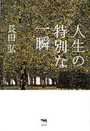
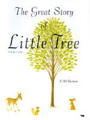
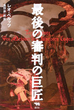
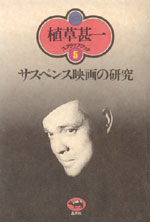
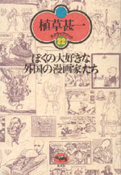
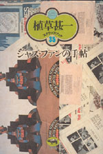

|

|
詩集 | ||||||
| 人生の特別な一瞬 | |||||||
| 長田弘 | |||||||
| A5判 128頁 | |||||||
| 定価1680円（本体1600円） | |||||||
| 4-7949-3532-3 C0092 | |||||||
| 人生には特別な一瞬がある。ーー川の流れを見つめるとき、ひとは自分の心の中を見つめている。川の色に、じぶんの心の色を見ている。旅をする。街を歩く。曲がり角を曲がる。そして、気づく。ここはどこなのか、わたしは今、どこにいるか、と。思いがけない出来事にひそむ、生の一瞬の輝きを結晶させた最新詩文集。 名詩集『深呼吸の必要』の詩人による珠玉の32篇。 | |||||||
 |
女性・絵本 | ||||||
| リトル・ツリー 副題/THE GREAT STORY OF LITTLE TREE |
|||||||
| 葉祥明 | |||||||
| A5変型 48頁 | |||||||
| 定価1575円（本体1500円） | |||||||
| 4-7949-6657-1 C0095 | |||||||
| 人災や天災など、生きているとぶつかるさまざまな困難。けれど生物たちは、知恵と勇気を身につけ、命をつないでゆく……。リトル・ツリーが暮らす美しい森をある日、突然の災難が襲います。そのとき、グレイト・ツリーがとった行動とは？これは、魂の成長の物語であり、私たち一人ひとりに脈々と受け継がれている愛の寓話です。 | |||||||
 |
【晶文社ミステリ】 | ||||||
| 最後の審判の巨匠 | |||||||
| レオ・ペルッツ 垂野創一郎訳 | |||||||
| 四六判・288頁 | |||||||
| 定価2100円（本体2000円） | |||||||
| 4-7949-2745-2 C0397 | |||||||
| 突如鳴り響いた二発の銃声、密室状態のあずまやで発見された瀕死の俳優は「最後の審判」という謎の言葉を残して事切れた。新たな犠牲を求めてウィーンの街を徘徊する「怪物」の正体とは？ 第一次世界大戦前のウィーンを舞台に展開される、全篇、悪夢の中を彷徨うような異色幻想ミステリ。都筑道夫、鮎川哲也らの言及でも知られる伝説的作品。 | |||||||
 |
映画 | ||||||
| 植草甚一スクラップ・ブック5 第7回配本 サスペンス映画の研究 |
|||||||
| 四六判 256頁 | |||||||
| 定価1470円（本体1400円） | |||||||
| 4-7949-2565-4 C0374 | |||||||
| 映画の魅力はサスペンス技法にある。イギリス特産のスパイ・スリラーから、フランス野郎ならではのギャングものまで──シネマディクトJが舌なめずりしながら語る職人芸の世界。スクリーンを見つめながら、暗闇のなかでハラハラしたいすべての人びとに贈る楽しめる本。（解説・双葉十三郎） | |||||||
 |
エッセイ | ||||||
| 植草甚一スクラップ・ブック22 第7回配本 ぼくの大好きな外国の漫画家たち |
|||||||
| 四六判 224頁 | |||||||
| 定価1470円（本体1400円） | |||||||
| 4-7949-2582-4 C0371 | |||||||
| 奇想天外なメカニズムを描きつづけて有名なヒース・ロビンソンから、残酷なユーモアでみる者を唸らせたトミー・アンゲラー、そしてアンダーグラウンド・コミックス界の曲者ロバート・クラムまで、世界のユニークなコミックスが続々登場。海外の雑誌、漫画本に目を通していた植草さんならではの愉快なガイドブック。（解説・草森紳一） | |||||||
 |
ジャズ | ||||||
| 植草甚一スクラップ・ブック35巻 第7回配本 ジャズ・ファンの手帖 |
|||||||
| 四六判 256頁 | |||||||
| 定価1470円（本体1400円） | |||||||
| 4-7949-2595-6 C0373 | |||||||
| 「ジャズ・マガジン」を読みながら、レコードに耳を傾け、鉛筆片手にノートをとる。コーヒーのにおいとジャズの響きが、今日も気持ちをリラックスさせる。ビル・エヴァンスやシェリー・マン、ジョン・マクラグリンからナベサダまで、植草さんはこんなミュージシャンたちも大好きだった。（解説・佐藤秀樹） | |||||||